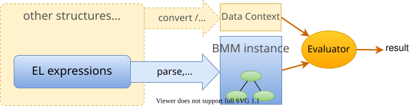
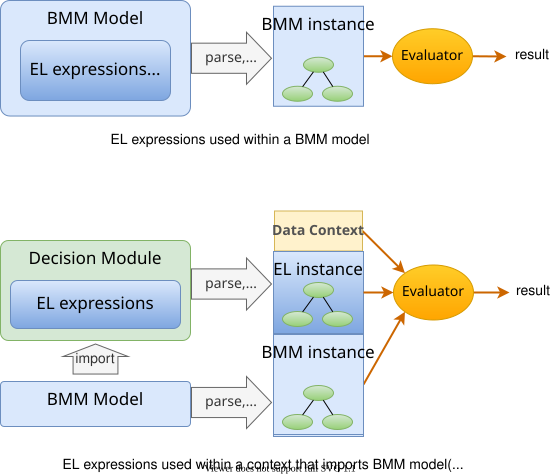

Overview
The openEHR Expression Language (EL) defines a syntax and grammar for the expressions whose meta-model is defined in the expression package in the openEHR Basic Meta-Model (BMM). As such it may be considered the default syntax. Other syntaxes or syntaxes are certainly possible, and other expression serialisation are possible, such as object graph serialisation into XML, JSON, YAML etc. Consequently, the BMM expression package should be considered the normative definition of openEHR EL. Not all openEHR implementations using BMM expressions need support it: they might for example only serialse in JSON or use purely graphical visualisation.
Within openEHR, the uses of EL include expressing the following:
-
pre-, post-conditions and class invariants in BMM model definition files;
-
rules in archetypes;
-
rules in openEHR Guideline Definition Language (GDL);
-
expressions within decision logic models (DLMs) designed for use with openEHR Task Planning.
It may also be used in any other suitable context.
Key features of EL include:
-
variable declarations, assignments and expressions;
-
strong typing;
-
standard logical operators including universal and existential quantification, as well as user-defined operators;
-
standard arithmetic and relational comparison operators, enabling the use of numerics;
-
parentheses for overridding operator precedence;
-
functions and agents (lambdas).
Design Background
The openEHR Expression Language is based on a limited first-order predicate logic language. It has similarities with OMG’s OCL (Object Constraint Language), and to the assertion syntax used in the Object-Z language [1]. See [2], [3], [4] for an explanation of predicate logic in information modelling. It also draws on the semantics and some of the syntax (particularly agent-related) of the Eiffel Language (ECMA-367). It is not exactly the same as any of these languages because:
-
it has a different target meta-model, namely the BMM
expressionmodel; -
the syntax is designed to be comprehensible to developers familiar with modern mainstream object-oriented and functional languages such as Java, C#, Python, TypeScript etc.
Requirements
The semantic requirements including the usual arithmetic, boolean, and relational operators, functions, logical quantifiers, operator precedence, constant values, and variables. In addition, there is a need to support multi-lingual translations for symbolic variables, in a similar way to the openEHR Archetype Definition Language (ADL2).
Execution Model
The assumed execution model of the Expression language is that EL statements are evaluated by an evaluator against a data context, which determines the truth values of the expression(s). The data context is the origin for some or all of the variables mentioned in the expressions, which may be read from and written to. It may concretely be a retrieved data structure, or data via an API call to the EHR, demographics, laboratory system etc.
The data context may be specified in two ways. It may be inferrable from the artefact or computing context in which the EL statements appear, or it may be specified explicitly. In the former case, the EL instance is minimally a value-returning logical proposition such as systolic_pressure > 0, where the declaration of variables or properties such as systolic_pressure are inferred from e.g. a data binding, and any manifest values obey this EL specification. The implicit case is shown below.

In the explicit form, an EL expressions appear within a BMM model definition, or within a context that explicitly imports a BMM model.

In both cases, the result of parsing into computable form for evaluation must result in instance of the BMM EL meta-types.
Formal Representation
Formally, an openEHR EL expression is any of the following evaluable entities:
-
terminal entities:
-
instance references, including literals, constants, variables and function calls;
-
predicates: Boolean tests on instance structures;
-
agents: i.e. delayed routine calls;
-
-
complex expressions created from:
-
equality operator: equality operator;
-
primitive operators: arithmetic operators, relational operators, boolean operators;
-
collection operators: logical quantification operators;
-
decision tables: if/then/else like structures containing conditional expressions.
-
These correspond to the meta-types defined in the BMM expression package, each of which is described in detail in the following sections.
References
-
[1] G. Smith, The Object Z Specification Language. Kluwer Academic Publishers, 2000. [Online]. Available: http://www.itee.uq.edu.au/~smith/objectz.html
-
[2] J. F. Sowa, Knowledge Representation: Logical, philosophical and Computational Foundations. California: Brooks/Cole, 2000.
-
[3] J. L. Hein, Discrete Structures, Logic and Computability, Second. Jones, 2002.
-
[4] H. Kilov and J. Ross, Information Modelling - an object-oriented approach. Prentice Hall, 1994.